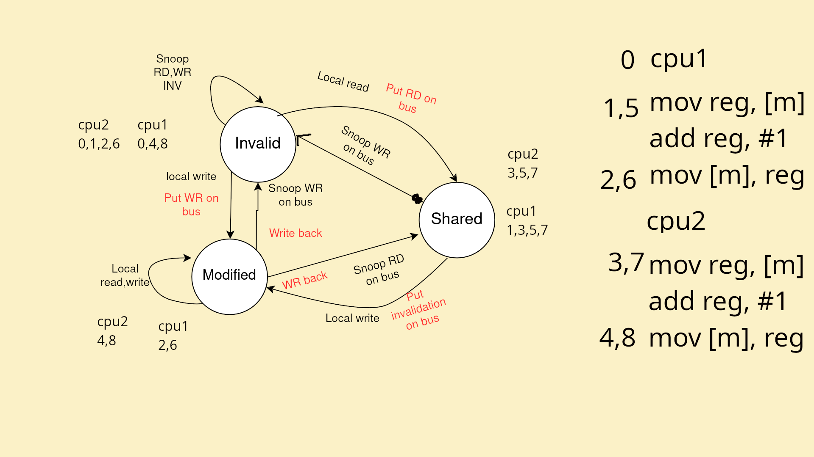

Zadanie 1. Zdefiniuj pojęcie spójności pamięci podręcznych (ang. cache coherence). Uruchamiamy
program ze slajdu pt. „Thread Function: Memory Accumulation” do wykładu na komputerze z wieloma
procesorami.
Czemu program działa szybciej, jeśli zmienna spacing jest równa 8 zamiast 1?
Posługując się diagramem przejść stanów, zaprezentuj działanie protokołu MSI1 na przykładzie dwóch procesorów, z których każdy zwiększa n razy zawartość komórki pamięci x o 1.
Każdy procesor wykonuje w pętli trzy instrukcje: załadowanie wartości z pamięci do rejestru,
wykonanie operacji arytmetycznej i zapisanie wartości do pamięci.
Chcemy prześledzić jak zmienia się stan linii pamięci podręcznej przechowującej zmienną x,
w zależności od akcji procesora i żądań przychodzących z magistrali pamięci.
Cache operuje na jednostkach zwanych liniami cache’u, które mają zwykle 64 bajty. A więc gdy ładujemy coś z pamięci głównej do cache’u to ładujemy od razu 64 bajty. Jeśli występuje sytuacja, w której w pamięci głównej mamy obok siebie dwie zmienne, używane oddzielnie przez dwa procesory, to mimo ze cpu1 korzysta ze zmiennej A, a cpu2 ze zmiennej B, to po każdej modyfikacji A lub B jeden procesor musi do drugiego wysłac informacje, że poprzednia linia cache’u jest nieaktualna i trzeba ją zaktualizować.
Nie wiem czy o to autorowi chodziło, mam nadzieje ze tak bo robienie diagramów jest irytujące

Zadanie 2. Zdefiniuj pojęcie modelu spójności pamięci (ang. memory consistency model).
Następnie opowiedz jakie gwarancje daje programiście spójność sekwencyjna.
Niestety procesory wykonujące instrukcje
poza porządkiem programu potrafią zmienić kolejność żądań odczytu i zapisu pamięci, co może zostać
zaobserwowane przez inne procesory. Artykuł „Memory ordering”2 opisuje model pamięci implementowany
przez architekturę x86-64 i ARMv7. Wyjaśnij gwarancje, które daje programiście każdy z tych modeli. Wybierz
ciąg instrukcji load i store, a następnie powiedz, które z nich procesor może zmieniać kolejnością wysyłając
do magistrali pamięci.
Model spójności pamięci określa kolejność w jakiej operacje na pamięci są wykonywane i widoczne dla innych procesorów
Spójność sekwencyjna daje gwarancje, ze operacje na pamięci wykonają się i będą widoczne dla innych w takiej kolejności, w jakiej są ułożone w programie.
x86-64 Daje nam najwięcej gwarancji, jedyny
reordering który jest zezwolony to wykonanie odczytów przed
zapisami.
Reszta kolejności jest zachowana, czyli zapisy są w kolejności i odczyty
są w kolejności.
ARMv7 daje bardzo mało gwarancji, jedne zapisy mogą być przed innymi zapisami, tak samo odczyty. Zapisy mogą być przed odczytami i wice wersa.
Konieczne z tego względu jest korzystanie z barier (dmb).
Problemem jest też Incoherent instruction cache pipeline, tzn. mamy
cache instrukcji i danych i jeśli dynamicznie zmodyfikujemy kod w data
cache, to nie zmodyfikuje się instruction cache i bedzie wykonywac sie
stary kod.
Jest jedna gwarancja, to znaczy zależność danych jest
zachowana.
Np.
mov reg1, [x]
mov x, reg1+1
najpierw musi wykonać się pierwszy mov, a dopiero potem drugi, ponieważ drugi potrzebuje znać najnowszą wartość reg1.
mov [m1], reg1
mov [m2], reg1
W x86-64 jest zachowana sekwencyjnosc zapisów, więc inne wątki
najpierw zobaczą modyfikacje m1, a dopiero potem m2.
Na ARMie moze nastąpić reordering i najpierw wykona się m2 potem m1.
Zadanie 3 (bonus). Uzasadnij, że poniższy program (algorytm Petersona) zachowuje się niepoprawnie,
gdy wykonywany jest na architekturze x86-64 (total store order model). Wskaż kontrprzykład, który pokona
ten algorytm na architekturze ARMv7 (weak memory model).
Następnie pokaż gdzie trzeba wstawić instrukcje bariery pamięciowej3 (więcej niż jedną!), aby program zachowywał się poprawnie.
1 shared boolean blocked[2] = { false, false };
2 shared int turn = 0;
3
4 void P (int id) {
5 while (true) {
6 blocked[id] = true;
7 turn = 1 - id;
8 while (blocked[1 - id] && turn == (1 - id))
9 continue;
10 /* put code to execute in critical section here */
11 blocked[id] = false;
12 }
13 }
14
15 void main() { parbegin (P(0), P(1)); }
x86-64 zezwala na reordering odczytów przed
zapisy.
Ponieważ while w while’u są tylko odczyty to może się ok wykonać zanim
wykona się linia 6 i 7.
W ten sposób oba procesory wejdą do sekcji krytycznej.
Na architekturze ARMv7 załóżmy, że nie mamy już
problemu reorderingu odczytów i zapisów.
Problemem jest jednak kolejność wykonania blocked i turn, przykład:
P(0):
turn = 1
P(1):
blocked[1] = true
turn = 0
while(blocked[0] && turn == 0)
// wchodzimy bo blocked[0] == false
P(0):
blocked[0] = true
while(blocked[1] && turn == 1)
// wchodzimy bo turn == true
Bariery na x86-64 przed while i przed blocked[id] = false. Na ARMv7 jeszcze między blocked i turn.
Podaj w pseudokodzie implementację blokady współdzielonej z operacjami «init», «rdlock»,
«wrlock» i «unlock» używając wyłącznie muteksów i zmiennych warunkowych. Nie definiujemy zachowania
dla następujących przypadków: zwalnianie blokady do odczytu więcej razy niż została wzięta; zwalnianie
blokady do zapisu, gdy nie jest się jej właścicielem; wielokrotne zakładanie blokady do zapisu z tego samego
wątku. Twoje rozwiązanie może dopuszczać głodzenie pisarzy.
RWLock = {owner: Thread, readers: int, critsec: Mutex, noreaders: CondVar, nowriter: CondVar, writer: Mutex}
def init():
owner = None
readers = 0
critsec = Mutex()
noreaders = CondVar()
nowriter = CondVar()
writer = Mutex()
rwlock = ...
return rwlock
def rdlock(rwlock):
lock(rwlock.critsec)
# ownerem moze byc tylko writer
while rwlock.owner:
wait(rwlock.noreaders.wait, rwlock.critsec)
# ktoś nas uwolnił
rwlock.readers += 1
unlock(rwlock.crisec)
def wrlock(rwlock):
lock(rwlock.critsec)
while rwlock.readers > 0 or rwlock.owner:
wait(rwlock.nowriters.wait, rwlock.critsec)
owner = threadid()
unlock(rwlock.critsec)
def unlock(rwlock):
lock(rwlock.critsec)
if readers > 0:
readers -= 1
if readers == 0:
if len(nowriter) > 0:
notify(nowriter)
elif owner and owner == threadid():
owner = None
if len(nowriter) > 0:
notify(nowriter)
elif len(noreaders) > 0:
notify\_all(noreaders)
else:
???
unlock(rwlock.critsec)